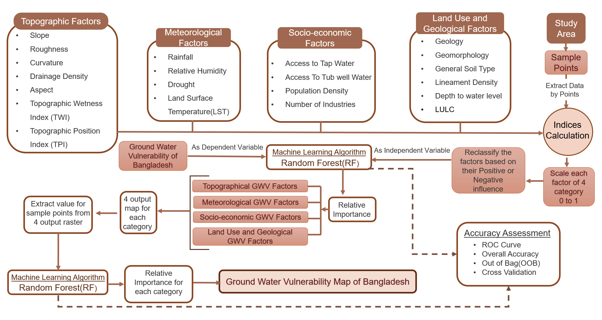
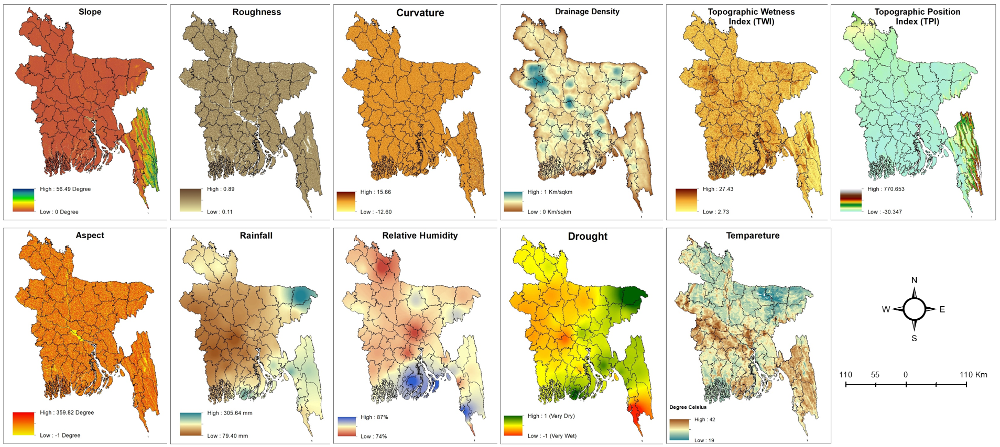
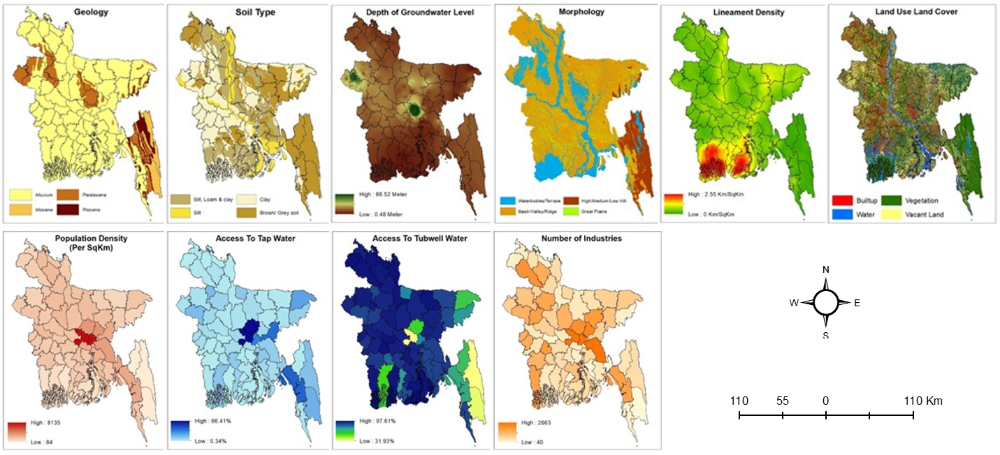

Authors
Saima Sekander Raisa, Showmitra Kumar Sarkar, Md. Ashhab Sadiq
Aim
To evaluate the spatial variability of groundwater vulnerability in Bangladesh using a multi-criteria, data-driven approach that incorporates environmental and socio-economic factors.
Summary
This study developed a comprehensive framework to assess groundwater vulnerability (GWV) across Bangladesh by integrating 22 factors into four themes (Topography, Meteorology, Socio-economy, and Land Use–Geology) and learning their contributions with a Random Forest model. Using 200 sample points and standardized rasters, the study produces category-wise and combined national GWV maps, highlighting high-risk zones and the drivers behind them.
Study Area
Bangladesh was selected as the study area due to its complex hydro-environmental conditions and rising groundwater challenges. Located in the Ganges–Brahmaputra–Meghna delta, the country spans about 143,998 km² and supports a population of around 171 million. Despite its riverine nature, increasing reliance on groundwater has created significant stress.
Groundwater vulnerability varies across regions, with coastal areas affected by salinity intrusion and northern regions influenced by hydrogeological and climatic factors. In major urban areas like Dhaka, rapid urbanization and population growth further intensify the issue. This study focuses on identifying vulnerable zones and the key drivers behind groundwater vulnerability.

Methodology
- Data Preparation: Derived 21 variables and grouped into four categories (Topographic, Meteorological, Socio-economic, and Land Use–Geological).
- Reference Indicator: Based on a prior groundwater potential study, 200 locations were selected nationwide and used in binary form (1 = vulnerable, 0 = non-vulnerable) to support index computation and model training.
- Model Development: Built a Random Forest model in Python (Spyder IDE) to evaluate variable importance.
- Spatial Mapping: Weighted indices were integrated in ArcMap using raster analysis to generate categorical and overall GWV maps of Bangladesh.
- Validation:Applied ROC Curve, AUC, and Cross-Validation metrics in Python for model accuracy assessment.

Topographic & Meteorological Factors
In topographic category, a total of 7 factors have been selected to assess topographic GWV.
- Slope
- Roughness
- Curvature
- Drainage Density
- Topographic Wetness Index
- Topographic Position Index
- Aspect
In meteorological category, 4 factors have been selected to assess meteorological GWV.
- Rainfall
- Relative Humidity
- Drought (SPI)
- Land Surface Temperature

Landuse-Geological & Socioeconomic Factors
In landuse-geological category, a total of 6 factors have been selected to assess landuse-geological GWV.
- Geology
- Morphology
- Soil Type
- Depth of Groundwater Level
- Landuse/Land cover (LULC)
In socioeconomic category, 4 factors have been selected to assess meteorological GWV.
- Population Density
- Access to Tap Water
- Access to Tubewell
- Number of Industries

Key Findings
- The Random Forest model achieved 81–95% accuracy.
- Precipitation was the dominant drought driver, contributing 28.32% to short-term and 26.78% to long-term drought variations.
- Apart from Precipitation, short-term droughts were influenced mainly by ET (13.57%) and NDWI (12.13%), while long-term droughts were governed by NMDI (14.27%) and NDVI (12.87%).
- The Rajshahi Division, especially the Barind Tract, faced the most frequent severe to extreme droughts during 2010–2019.
- On average, 5% of the area experienced extreme droughts and over 12% endured severe droughts.
- Long-term SPI indices (SPI-6, SPI-9) captured a higher frequency of extreme events than short-term SPIs, revealing the cumulative effect of rainfall deficits.